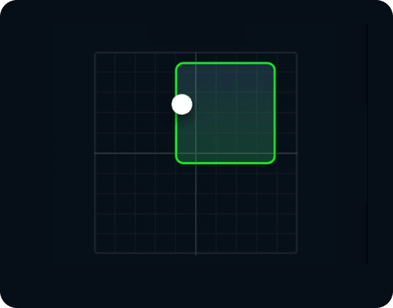

Overall Results
뒤로가기
Search
Partial Weight Bearing
Single Heel Raise(Afficted Side)
Exercise Time
13:55:00~14:55:00 8 Sets
2’
나의 자세

운동 중 압력 중심 패턴이 가이드 라인 안에 위치 해야 운동 효과가 좋습니다.
* 자세영역을 Tap 시 운동 영상 조회 화면으로 이동합니다.
분석 결과
오른쪽으로 쏠리는 경향을 보입니다.
* This result is for informational purpose, please consult with a specialist for accurate diagnosis and treatment.